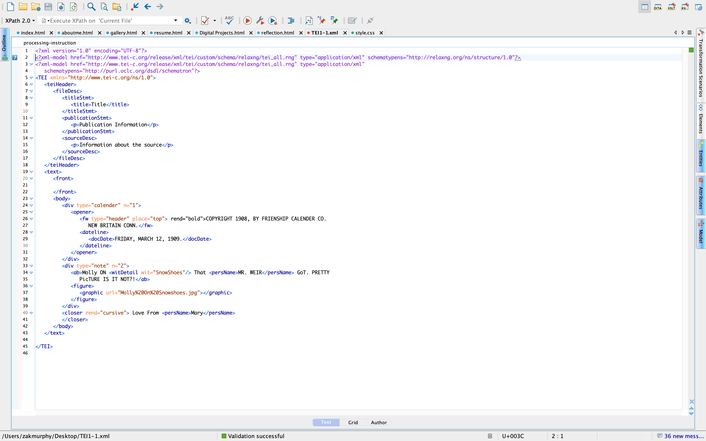

Digital Projects
TEI Encoding About Behrend History
- In my Text Encoding class we are developing TEI code for Behrend History
- This involves reading past documents and writing in exact form what, who, when, and where. This project is actually very exciting because I get to learn about the history of behrend, and make a great project that we will turn into an HTML just like this!
My Work
Mary Behrend Calender